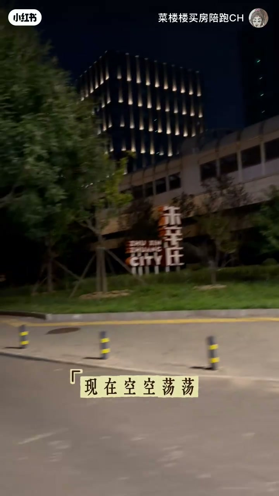

内容要点
菜楼楼买房陪跑CH 用近四分半走访朱辛庄：曾撑起板块故事的小米大楼如今空空荡荡，研发核心已回流西二旗；石头科技、好未来等合计产业人口有限，却被炒成昌平网红板块。作者对比亦庄的产业与学区，质疑即将开盘的星寰时光凭什么站稳六万——得房率再高，本地接盘不足时，新房热度退去一样会破发。
知识结构
小米大楼灯带还亮，楼里基本没人；并非简单裁员，而是自2024年起把朱辛庄研发文字/核心团队迁回西二旗，甚至另租园中心办公楼消化回流。
石头科技、好未来等耳熟能详企业合计两三千人；中软国际写字楼填满也不过约三千，紫光数字经济园约千人——有效高薪产业人口屈指可数，却被炒成昌平网红板块，「全是泡沫」。
亦庄约四十万产业人口+南城顶级学区，新房也就六万多；朱辛庄既无顶级教育也无高端产业落地，凭什么站稳六万。
得房率接近100%也不该把刚需当韭菜；中海时光之境特价约5.5万、1.7公里外项目已降到四万多，星寰时光卖六万到二手一样要破发。
本地接盘严重不够，买房多为顺地铁过来的外溢刚需；新房有故事有滤镜，一转二手光环退去就会冷静。通勤上可两站到西二旗再换十三号线，但人群与稳定性才是本质。
买朱辛庄不要只看配套简介：产业人口、教育与本地接盘决定二手能否接住；新房故事退潮后，定价若脱离真实需求，破发是大概率。作者立场明确——得房率与户型是表象，本质在人群与稳定性。
00:00-01:00小米大楼空了：不是裁员，是回流西二旗
夜间镜头扫过朱辛庄地标，作者先抛出现状：曾经充起整个板块房价的「精神支柱」小米大楼，现在空空荡荡，「只剩下LOGO和灯带还亮着，楼里基本没人」。隔壁石头科技至少还能看到加班的人，形成刺眼对比。
她随即否定「小米在裁员」的简单解释：从2024年开始，小米把朱辛庄所有研发核心团队搬回西二旗总部；回流人太多总部坐不下，甚至在旁边的园中心另租一栋办公楼。企业动线一变，板块的「故事滤镜」就先裂了一道口。

01:29-02:15产业人数屈指可数，却被炒成网红板块
镜头转向产业体量：石头科技、好未来这些耳熟能详的企业，全部员工加起来也就两三千人；正在动工的中软国际，就算把约8.7万平米写字楼全部填满，也不过三千人量级；紫光数字经济园也就一千来号人。「整个片区有效的高薪产业人口屈指可数」，却「硬生生地被炒成了昌平网红板块」——作者原话是「全是泡沫，都是虚的」。
对比亦庄更刺眼：一边是约四十万产业人口、还有南城顶级学区加持，新房房价也才卖六万多；另一边「既没有顶级的教育，也没有高端的产业落地」，「又凭什么能站稳六万呢」。
02:15-02:42星寰时光卖六万：得房率救不了破发
即将开盘的星寰时光，哪怕得房率接近100%，「你卖六万就是把刚需当韭菜」。有人会拿旁边中海时光之境开盘六万多、低楼层特价约5.5万来辩护，觉得得房率高就划算；作者立刻甩出参照：1.7公里外项目已降价到四万多，靠内单价五万出头销量才有起色；刚交楼的新房二手要降到五万才有谈判空间。
结论干脆：「星寰时光要卖六万，到二手时一样要破发。」定价谈的不是装修表，而是未来谁接盘。
02:42-04:33最大问题：本地接盘严重不够
朱辛庄最大的问题被收成一句：「本地接盘严重不够。」现在买房的大多是顺着地铁过来的外溢刚需——新房有热度、有产业故事、有滤镜，「大家很容易脑热买单」；一转成二手，光环退去，所有人就反应过来。
通勤层面，作者提到可两站到西二旗、再换十三号线去五道口，位置并非一无是处；片尾也展示了约112平米三面采光户型。但笔记文案写得很清楚：得房率、户型都是表象，朱辛庄的本质在人群、在稳定性。「想要买对房，就要把楼盘这个压缩包打开……你不当韭菜谁当。」
完整转录（74段）
以下文本由 Whisper medium 模型自动转录，可能存在少量识别误差，已尽可能修正。
康平楼是最魔幻的地方
中新庄的现状
曾经充起整个板块儿房价的
精神之主小米大楼
现在空空荡荡
只剩下LOGO和灯带还亮著
楼里基本没人
对比一下隔壁的石头科技
至少在这个时候还都有加班的人
是小米在裁员吗
其实不是
从2024年开始
小米就把中新庄所有的
研发文字核心团队
搬回了西二旗总部
因为回流的人太多
总部坐不下
他甚至在旁边的园中心
租了一栋办公楼
现在的企业
我们再看整个板块儿产业体量
也少得可怜
石头科技好未来
这些耳熟能详的企业
全部员工加起来也就两三千人
正在动工的中软国际
就算把8.7万平米的
写字楼全部填满
也不过三千人
紫光数字经纪员也就一千来号人
整个片区有效的高薪产业人口
屈指可数
就这么点产业
硬生生地被炒成了昌平网红板块
但全是泡沫 都是虚的
对比一下就懂得有多离谱
一桩40万的产业人口
还有南城顶级的学区加持
新房房价也才卖6万多
租新庄既没有顶级的教育
也没有高端的产业落地
又凭什么能占稳6万呢
将开盘的新环时光
哪怕得房率接近100%
你卖6万就是把刚需当韭菜
可能有人会觉得
旁边的中海时光之境
开盘6万多
现在低楼层的特价也要5.5万
新环时光得房率这么高
店面卖6万是很划算的
但1.7公里外的新要未来
降价到了4万多
靠内单价5万出头
销量才有了 contractors
刚交楼的新房二手
要降价到5万
才有谈判的可能性
新环时光要卖6万
到二手时一样要破发
为什么会这样呢
租新庄最大的问题就是
本地接盘下严重不够
现在买房的大多是
顺著地铁过来的外溢刚需
新房有热度
有产业故事 有滤镜
大家很容易恼热买单
一既一既变成二手房光环退去所有人就反应过嚟
我 只搭悲吐城
两站到西二旗
到西二旗换成13号线到五道口
C
位置不错的112平米三面框户型